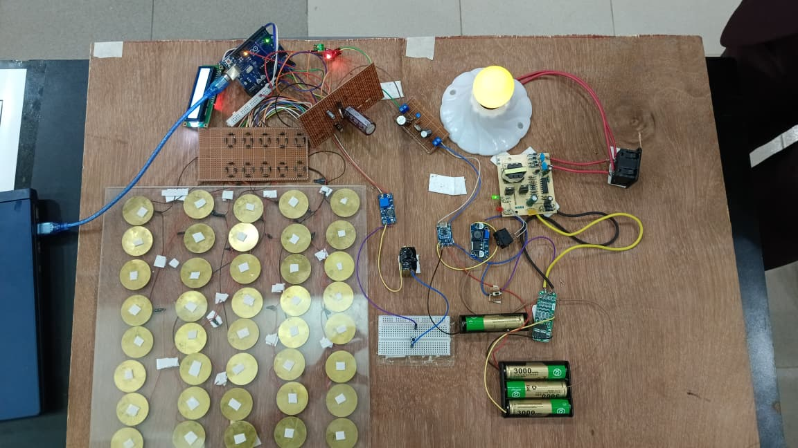

ARCHIVE FILE N° 01 • ENGINEERING DOSSIER
A fully realized hardware prototype validating the conversion of mechanical energy from ambient human footsteps into stable, conditioned electrical energy for practical low-power applications.
Footsteps generate mechanical kinetic impulses that are dissipated into surrounding surfaces in daily environments. The objective of this project was to capture this ambient strain energy and rectify it into usable DC power using an array of piezoelectric transducers.
An array of 40 piezoelectric discs was physically embedded beneath an engineered stepping platform and coupled to precision power-conditioning and storage circuitry. The prototype validated the operational viability of kinetic energy conversion under continuous load.

40 Piezoelectric Disc Transducers
Fast-Recovery Bridge Rectifier Circuit
Electrolytic Smoothing Capacitors
DC-DC Boost Voltage Converter Module
Rechargeable Chemical Battery Cell
Monitoring & Telemetry Section
Demonstration LED Electrical Array
Low-Loss Interconnect Wiring Harness
Piezoelectric discs generate high-voltage but micro-ampere electrical pulses with severe variability. The central engineering hurdle was minimizing diode forward-voltage drop in rectification, suppressing AC ripple, and stabilizing the energy into a low-impedance storage element.
Spearheaded the project from initial schematic design and mathematical modelling to physical assembly, breadboard testing, soldering, transducer calibration, and formal presentation to faculty evaluators.